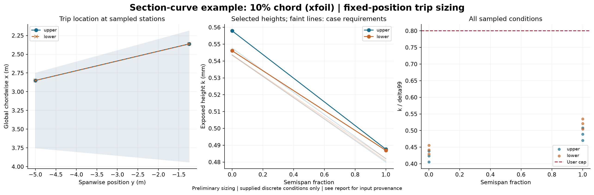

Status: feasible. Geometry comes from supplied sections, not the earlier left-wing template. Eta spans only the supplied Y stations; no unprovided wing root, tip or full planform is inferred. All coordinates are interpreted in metres. Upper/lower curve order must match the section contour order. Angle mapping is explicit in the workflow settings. XFOIL is a 2D section method without crossflow. XFOIL computes its own Cp from geometry; imported Cp is not prescribed to its viscous solver. The undisturbed calculation allows natural transition; the requested trip is not imposed in XFOIL. DUMP supplies integral quantities, not resolved u(y). Low-Mach Hk/theta reconstruction is approximate. Re_k reconstruction uses constant freestream kinematic viscosity; DUMP does not provide nu(y) or wall temperature. Laminar confirmation is predicted by the solver transition model, not established experimentally.
Source: integral; critical Re_k: 600.0; height multiplier: 1.1; k/delta99 cap: 0.8.
Calibration: Subsonic equiaxed distributed grit; NASA TN D-3579. Mach cap 0.95 is a tool guard.

| surface | eta | x_c | height_mm | status | reason |
|---|---|---|---|---|---|
| upper | 0.0 | 0.1 | 0.5579226831836566 | feasible | |
| lower | 0.0 | 0.1 | 0.546087298105747 | feasible | |
| upper | 1.0 | 0.1 | 0.4876444636013093 | feasible | |
| lower | 1.0 | 0.1 | 0.4869456665779883 | feasible |
Uniform-height alternative across supplied stations: {'status': 'feasible', 'height_mm': 0.5579226831836566, 'reason': ''}
See per-condition results, design table, and full results and input hashes.